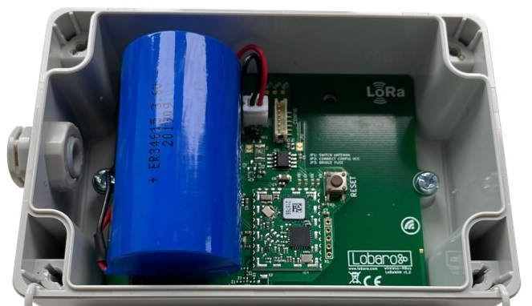

Wireless mBUS over LoRaWAN Bridge
The latest firmware version is v2.5.13 (since 2020-09-24)
Which firmware version am I using right now?
You can see the firmware version of your device by inspecting the USB log output in our PC maintenance tool. Or use the information send in the daily status uplink message send on LoRaWAN port 1 (see Status Packet).
How do I update the firmware?
Please refer to Updating Firmware on the page about our Lobaro Maintenance Tool.
Firmware Downloads
Select correct Hardware revisions
Due to continuous development there exist two main hardware revisions of the Lobaro wMBUS over LoRaWAN bridge hardware. Please use the images below to select the correct firmware file for your given hardware.
The (dedicated) revision 2.x has a simpler production process which helped us to optimize bigger deployments.
Hardware Revision 2.x (active since 2020)

Download latest version:
Latest version
- app-wMbusLoraBridge-2.5.13+hw2.hex (hardware v2.x) [current release]
Previous versions (not recommended for use)
- app-wMbusLoraBridge-2.5.2+hw2.hex (hardware v2.x)
- app-wMbusLoraBridge-2.5.1+hw2.hex (hardware v2.x)
- app-wMbusLoraBridge-2.4.0+hw2.hex (hardware v2.x)
Hardware Revision 1.x (active since 2017)

Latest version
- app-wMbusLoraBridge-2.5.13+hw1.hex (hardware v1.x) [current release]
Previous versions (not recommended for use)
- app-wMbusLoraBridge-2.5.2+hw1.hex (hardware v1.x)
- app-wMbusLoraBridge-2.5.1+hw1.hex (hardware v1.x)
- app-wMbusLoraBridge-2.4.0+hw1.hex (hardware v1.x)
Please note revisions 1.x are no longer the default variant since 02/2020
The v1 hardware revisions are still active but only on special sales inquiry!
Please contact Lobaro if you are interested in revisions 1.x hardware.
Old v1.x firmware
Old v1.x firmware version
The v1.x firmware branch is no longer recommended for use.
If you rely on these older version you can find it at the end of the v1 documentation.
E-Mail release notifications
Firmware Release Notifications
We normally send e-mail notifications upon release of new firmware versions. To receive this mails you can sign up to the Lobaro newsletter here.
Subscribe to our email newsletter here
Make sure to select the "Firmware Updates" checkbox!
Release changelog
2.5.13 - 2020-09-24
Fixed
- Fix handling of Type B wMBus Telegrams
2.5.12 - 2020-09-09
Fixed
- Fix possible OOM failure on complicated Cron Expressions.
2.5.11 - 2020-08-18
Added
- Add config parameter
TxPowerto change maximal TX Power, with default of 13dBm to specialised FW version.
2.5.10 - 2020-08-14
Added
- Check config parameters
DevEUI,JoinEUI, andAppKeyafter boot.
Changed
- Invalid values for config parameter
NwkKeyare now treated like value00000000000000000000000000000000(that is, running device in LoRaWAN 1.0, instead of 1.1 with potential fallback to 1.0). - Remove
OpModefrom config parameters.
2.5.9 - 2020-08-10
Added
- Adjust HW1 specific code to implement recent features originally developed on HW2.
2.5.8 - 2020-08-07
Fixed
- NewChannelReq can remove channels by setting the Frequency to 0 instead of just disable them
- Fix bug where NBTrans > 1 leads to multiple responses from LoRaWAN stack
2.5.7 - 2020-08-07
Added
- Add PowerOn SelfTests for SRAM, EEPROM, VoltageMeasuring
- Lobawan 2.0.1, request ACKs to check network connection for
lostReboot - Skip random timeout on first upload
2.5.6 - 2020-08-06
Fixed
- LoRaWAN Test support command 0x05 (LinkCheckReq)
2.5.5 - 2020-08-04
Added
- Brown-out protection for HW2 (below 2.5V, recovery at 2.6V).
Changed
- Send ACK for remote reboot request before rebooting.
2.5.4 - 2020-07-31
Fixed
- LED was on after wakeup from deep sleep
- Latest version of LoRaWAN stack that passes all LCTT tests
Added
- Allow to enter testmode for LCTT by setting the DevEUI to 0001020304050607
v2.5.2 - 2020-06-17
- Time Sync only one attempt at bootup
- use Lobawan v1.2.2, fixes issues with OTAA Join under certain conditions
v2.5.1 - 2020-05-15
Changed
- Adjust to Lobawan v1.2.0
v2.5.0 - 2020-04-02
Added
- Also send status message when not collecting telegrams.
- Add second cron expression for status message.
- Add remote command for triggering collection of telegrams outside of cron.
- Add
listenOnBootconfig parameter allowing to disable collection on boot. - Send Status message before listening on boot.
Removed
- Remove learning mode.
Changed
- Status message has an additional byte "flags"
v2.4.0 - 2020-02-25
- Add new Payload Format 2 with Timestamp and RSSI.
v2.3.10 -2020-02-21
- Add version number of LoRaWAN-Stack to log.
- Fix crash on append function of remote config.
v2.3.9 - 2020-01-21
- Fix minor memory Leak in wMBus parser
v2.3.8 - 2020-01-09
- Enhance wMBus reception.
v2.3.7 -2020-01-08
- Internal use only
v2.3.6 -2020-01-07
- Increase wireless MBUS C1/T1 mode receive bandwidth
- Change detection method for incoming C1/T1 mode telegrams
v2.3.5 -2019-12-23
- Improve wireless M-BUS C1/T1 mode receive sensitivity
v2.3.4 -2019-12-13
- Improve reset line usage (dedicated pcb version)
- Fix issue with bad measurement timing for status message battery voltage (std. pcb version)
v2.3.3 - 2019-12-10
- Optimize LoRaWAN RX1/RX2 window timing + add more precise downlink logs
v2.3.2 - 2019-11-18
- Fix crash on receiving certain long non-standard telegrams.
v2.3.1 - 2019-11-13
- Improve Filtering of non-standard wMBus-telegrams
v2.3.0 2019-11-12
- Migrate to alternative dedicated board
- Fix Deep Sleep settings on dedicated board
- Fix rx/handling of S1-mode CRCs of unencrypted telegrams in wMBUS driver
v2.2.0 - 2019-09-13
- Integrated with new LoRaWAN stack, now supporting v1.1, Class C, downlinks, ...
v2.1.3 - 2019-03-11
- New Parameter: learnedListenSec to define how long to listen when meters was learned
v2.1.2 - 2019-03-11
- Packet size depending on SF with payloadFormat = 1
v2.1.1 - 2019-02-20
- New Parameter: timeSync - request time with status packet and upload status packets until we got a valid time
- New Parameter: payloadFormat - 0 = as in older versions, 1 = new split format including receive timestamp (see below)
- The upload is randomly delayed by 1-30 seconds to avoid collisions
New payload Format "1":
LoRaWAN Port: 101
Message: <5 byte Timestamp UTC>
Messages are split into chunks with 1 prefix byte: Prefix byte bits: <7..2 RESERVED><1 LAST><0 FIRST> The FIRST bit is set on the first packet. The LAST bit is set on the last packet. Together with the LoRaWAN framecounter, a whole message can be reconstructed in the backend.
v2.0.0 - 2019-02-12
- Leanring mode to learn up to 20 devices with their intervals.
- New Parameter: learningMode - set to true to allow deep sleep based on learned intervals (default: false)
- New Parameter: meterIntervalSec - predefine the sending interval of the meter, so it needs not to be learned (default: 0 = learn intervals)
Learning mode: Up to 20 devices are learned. When received the first time, the device is added to the list. When received the second time the interval is calculated. The second step is omitted when "meterIntervalSec" ist set to any value but 0. When learning was completed during one listening interval the device will only wakeup 10 seconds before and after receiving the learned meters in future. When missing one device for whatever reason, the bridge will start the learning mode again and stay awake for one full listening period.
While receiving learned sensors the maximum receive interval is doubled but ends as soon as all learned devices are received.
v1.6.0 - 2019-05-20
- Add additional config parameter "cmodeCompatibility" to allow wideband receive as fallback
- fix issue with crc validation of unencrypted meters
v1.5.8 - 2019-02-18
- Reduce chance to miss wMbus packet when there is a lot of traffic
v1.5.7 - 2019-01-07
- Fix issue with very large T1 mode telegrams
v1.5.6 - 2018-11-20
- Support new FRAM memory type
- Improve random generator behaviour
v1.5.5 - 2018-11-14
- internal use only
v1.5.4 - 2018-10-25
- Support LoRaWAN NBTrans > 1
- Don't allow to set unsupported FSK DR during ADR
v1.5.3 - 2018-10-18
- Fix bug with not working deduplication of same wMBUS messages during listen intervals
v1.5.2
- Support LoRaWAN Rx1 DataRate Offset
v1.5.1
- New parameter "resetHours" (default = 0): Hours after which the firmware will reset and rejoin the network (0 = never)
v1.5.0
- Changed duration parameters to seconds: cmodeDur -> cmodeDurSec and smodeDur -> smodeDurSec
- Status packet is 2 byte shorter, version is encoded with 3 bytes now
- Upload correct battery status in DevStatusReq
LoRaWAN Changes: - Support ADR ChMask to disable Channels - Restore default channels when loosing uplink connectivity - Support LoRaWAN NewChannelReq MAC command - Support LoRaWAN DlChannelReq MAC command - Support LoRaWAN RxParamSetupReq MAC command - No LoraWAN MAC Commands are dropped when unknown MAC command is received - Fix bug with endless loop when unknown LoRaWAN MAC command was received - Improve debug logs of LoRaWAN stack
v1.4.1
- Bugfix: Allow big wMBUS raw messages > 160 Bytes in T1 mode
- Improved cfg parameter explanation texts
- Improved wmbus telegram terminal output
v1.4.0
- New Parameters for ADR (OTAA = false): AppSKey, NetSKey, DevAdr
- New Parameter: OTAADelay to configure the delay between OTAA joins on fail + [0% ... 30%]
- Bugfix: Support LoRaWAN Status MAC command
- Bugfix: TxPower was not considered
- Requires Lobaro Tool > v1.3.1 for configuration
v1.3.1
- Fix ADR Bugs
v1.3.0
- Allow to enable ADR (default: enabled)
v1.2.0
- Increase config version (Config will be reset)
- Introduce LoRaWAN default parameter
v1.1.0
- New Filter: device id (devFilter), device type (typFilter), manufacturer (mFilter)